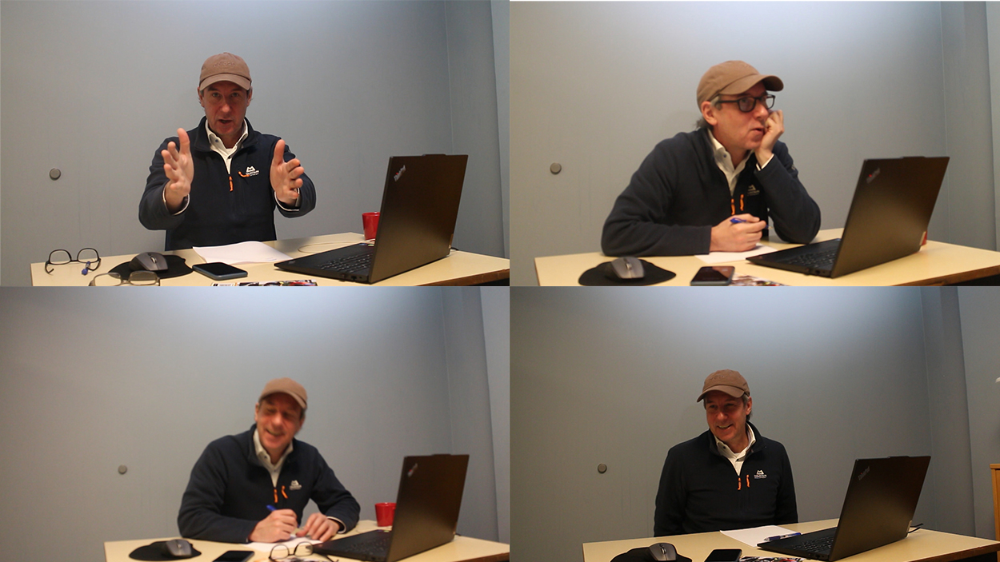
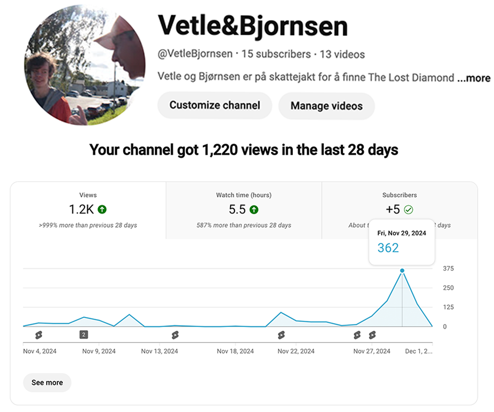
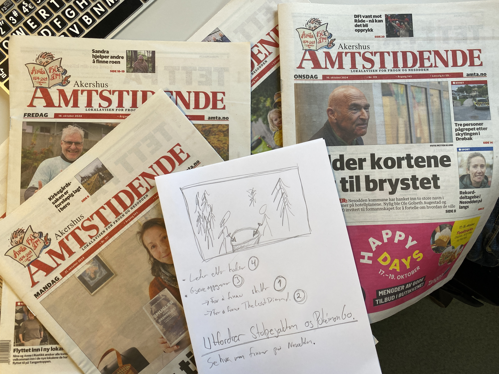
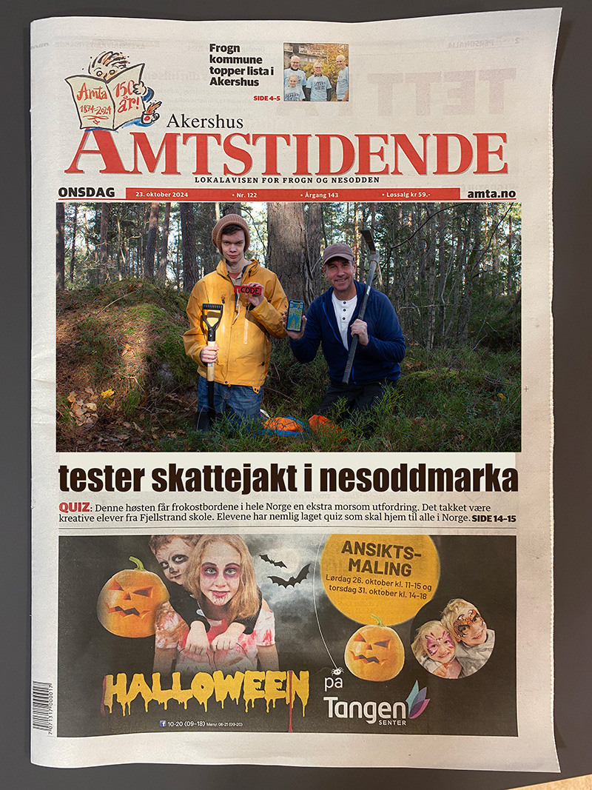
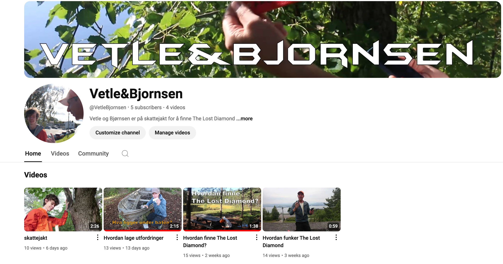

vetle caspersen
portfolio
Mine topp tre videospill for mobilTorsdag 24. april 2025 Oppdrag: Lag en video hvor du presenterer mobilspill
Jeg startet med å finne frem kamerautstyr, så gikk vi ned på mediarommet og satt opp kamera.
Men først prøvde vi å ta opp fra mobilen. Det gikk fint, men vi fikk ikke overført fra Android telefon til Mac.,
så vi måtte finne en mer kreativ måte å filme det. Så vi filmet det med å sette kamera sånn at den viste skjermen.
|
|
Bakomfilm for Jakten På PåskeeggeneTorsdag 10. april 2025 Oppdrag: Filme Bjørn og lage en bakomfilm
Bjørn forbereder Jakten På Påskeeggene i Sandefjord og skal lage info video. Vetle
har oppdrag med å lage en bakomfilm og intervjue Bjørn i prosessen. |
|
Video IntervjuTorsdag 27. mars 2025 Oppdrag: Klipp og publiser intervju om Den Kortvokste Maler
Vi fant frem utstyr og gikk ned i Mediarommet og satt opp to kameraer. Filmet deretter intervju
av Vetle som handler om filmen Den Kortvokste Maler og hvordan den ble laget. |
|
Bildeutsnitt og LyssettingTorsdag 13. mars 2025 Oppdrag: Lag en video som viser ulike bildeutsnitt.
Håvard viste videoer om ulike bildeutsnitt og lyssetting noen dager før.
Vi ville prøve det samme. Først var vi inne på NDLA og sjekket ulike bildeutsnitt:
Ultra Total, Total, Halvtotal osv. |
|
Lage video om bål i skogen.Torsdag 6. mars 2025 Oppdrag: Lag en video om å lage bål i skogen. Vi startet med å lage en plan om hvordan vi skulle filme det. Vi fikk mes oss Mariia om å filme den. Så dro vi med bil et stykke og gikk inn i skogen ved Bjørnemyr skole og fant bålplassen. Så fant vi fram tingene vi skulle bruke og så startet vi å filmen videoen. Så dro vi tilbake og jeg klippet videoen og la la den ut på YouTube. |
|

|
Lage TikTok konto og legge ut videoTorsdag 27. februar 2025 Oppdrag: Lag konto på TikTok og last opp videoer. Vi fant noen gamle videoer som hadde gått bra på YouTube. Vi gikk til tiktok.com og lagde en tiktok-bruker "Vetle&Bjørnsen" Så lastet jeg opp to videoer, to YT-shorts videoer jeg hadde fra før. De har fått 0 visninger foreløpig og vi skjønner ikke helt hvorfor. |
Lage video som tester glidecam.Torsdag 27. februar 2025 Oppdrag: Lag en video som sammenlikner glidecam med andre moderne kameraer. Vi gikk ned på studioet og startet med å sette sammen glidecam og vise frem de forskjellige kameraene. Så gikk vi ut og filmet Bjørn gå fremover med alle kameraene. Så gikk vi tilbake og jeg klippet den. Så kom Bjørn tilbake og viste hvordan man forminsket bilde slik at de ulike testene blir vist ved siden av hverandre. Så la vi den ut på YouTube-kanalen. |
|
Lage video tutorial om "hvordan fly drone".Torsdag 13. februar 2025 Oppdrag: Lag en video tutorial om hvordan fly drone
Vi startet med hvordan man startet dronen også gikk vi ned i studioet med kamerautstyr
så filmet Bjørn, mens jeg forklarte hvordan man skrudde på dronen og gjorde den
klar for flyving. Så styrte jeg den rundt nede i studioet.
Så gikk vi opp og jeg klippet filmen og la den ut på YouTube. |
|
|  |
Ta opptak fra Bjørn selger. Teste/jobbe med lys og fokus.Torsdag 6. februar 2025 Oppdrag: Filme Bjørn når han selger. Sette opp lys og teste bildekvalitet/fokus
Vi jobbet med filming av at Bjørn ringte til bedrifter som holder til i Sandefjord.
Min jobb var å filme dette. Vi hentet lys og satt dette i rommet og testet ut ulike styrker og posisjoner for
å få lyset til å treffe forskjellige steder. |
Lage 60 sekunders video med Bjørn som selgerTorsdag 30. januar 2025 Oppdrag: Bjønr skal drive telefonsalg. Film dette og lag en kort vider som legges ut på YOouTube.
Startet med å finne et ledig rom. Så satt jeg opp kamera og filmet jeg at Bjørn ringte tre-fire bedrifter.
Også klippet jeg den ned til 90 sekunder selv. Også klippet vi den sammen ned til 60 sekunder.
Jeg foreslå å legge på animerte introer og avslutning. Dette er templates som ligger i Davinci Resolve.
Så la vi den ut på YouTube som unlisted. |
|
Lage 60 sekunder video uten hjelpTorsdag 23. januar 2025 Oppdrag: Ta med kamera og stativ. Film og lag en velgfri video på 60 sekunder og legg den ut på YouTube som unlisted. Startet med å filme hjemme. Så gikk jeg til skolen og så på det jeg hadde filmet. Og fant ut at det ble uskarpt, så da måtte jeg finne på en annen ide. Så da tok jeg bare masse andre filmklipp og la på en auto-generert intro i Davinci Resolve. Også la jeg på noe musikke. En eksplosjon. Og deretter ut på YouTube. |
|
Fokusere på å løse "et problem"Torsdag 9. januar 2025 Oppdrag: Filme at Bjørn løser utfordringer på The Lost Diamond, hvor et skal fokuserer på å "løse problemer" som oppstår underveis. Klippe og publisere en 60 sekunders YouTube Shorts. Vi gikk ut i snøen og filmet at Bjørn gikk rundt å lette etter utfordringer. Bjørn hadde utfordringer med å komme fram i snøen. Og så klippet vi og la ut videoen. |
|
Lage og teste info-screen overlay på Shorts videoerTorsdag 19. desember 2024 Oppdrag: Vi må ha et info overlay på videoer som viser hvor mange poeng og hvor mange utfordringer man har igjen til man finner diamanten. vi gikk rundt på Bergerbanen, Tangen og Varden og tok utfordringer. Og så klippet vi videoen og la på infoscrenn, sånn at seerne kan se hvor mange du har igjen. |
|
Intervju med Amta og testing av YouTube ShortsTorsdag 5. desember 2024 Oppdrag: Bli intervjuet av Amta og bidra til at medialinjen på Nesodden vgs blir fremmet. Samt filme materiele til testing av YouTube Shorts visninger. Vi dro opp på Samfunnshuset på Tangen og møtte Amta journalist. Så snakket vi med henne og viste henne hvordan vi gjorde ting og snakket om The Lost Diamond. Vi snakket om yrkesfag og hvordan det er å jobbe for The Lost Diamond. Hva jeg gjør osv. Etter det laget vi to korte videoer fordi vi trengte en til KOnKom og en annen for å teste ut hva som er best for å få mest visning. Så dro vi tilbake til skolen og klippet den ene videoen, for å teste ut visninger på videoer som er rundt 10-15 sekunder. Jeg la den ut på YouTube. |
|
|  |
Status YouTube kanalTirsdag 3. desember 2024
YouTube-kanalen går bra. Vi har fått mer og mer visninger og Shorts filmer.
Ikke så bra med de vanlige videoene. |
Være med å lage julekalender for The Lost DiamondTorsdag 28. november 2024 Oppdrag: Være kameramann, klipper og med ut til branntårnet i Frogn for å gjemme skatt til julekalender. Publisere video som shorts på YouTube. Vo skulle gjemme et liggeunderlag som skatt ved branntårnet. Først måtte vi kjøpe vanntette poser på Jula i Ski. Det var fine filmforhold. Så dro vi opp til tårnet og filmet der. Så dro vi tilbake til skolen og klippen videoen. Så sendte jeg den til Bjørn, fordi han skulle fikse noe mer på den for å få den mer juleaktig. |
|
Være med å lage julekalender for The Lost DiamondTorsdag 21. november 2024 Oppdrag: Være kameramann og dra ut å gjemme julegave-skatter i Drøbak. Publisere video som shorts på YouTube.
Vi dro til Drøbak med en gang. Og så gikk vi rundt ved Follo Museum og gjemte tre ting. Min oppgave var å
filme Bjørn gjemme tingene. Jeg gjemte den siste skatten. Vi øvde på å lage en Live Transition, at vi bytter
på å filme når kamera er på. Vi ble fornøyd med den. |
|
Vis og track mobilskjerm på veggenTorsdag 14. november 2024 Oppdrag: Vis mobilskjerm på en vegg når Bjørn skal forklarer poeng på The Lost Diamond. Legg den ut som en Shorts på YouTube.
Startet med å filme en snutt og at Bjørn pekte på veggen og sier hva de forskjellige tingene på websiden er.
Og legge på musikk. Så gikk jeg å klippet filmen. det tok hele dagen. For å få bildet på veggen så maåtte man gjøre noe spesielt.
I Davinci resolve brukte vi Planar Tracker for å sette et punkt som webskjermen skulle vises på. Deretter brukte vi Magic mask
for at Bjørn skulle vises over bildet på veggen. |
|
Trene mer på å være kameramannTorsdag 7. november 2024 Oppdrag: Samme som forrige torsdag. Trene på å være kameramann og lage shorts på max 60 sekunder som skal lastes opp på YouTube. Filmet at Bjørn snakket med Stig ang. pressemelding for Opplev Sandefjord.. Jeg klippet den til å bli et minutt og la den ut på YouTube. Det gikk veldig fort, så jeg lagde en til. Da snakket Bjørn med både Håvard og Stig. Så klippet jeg den og la ut på YouTube, Uten hjelp fra noen. Filmene ble vist til Knut Einar og Stig. |
|
Være kameramann og lage shorts videoTorsdag 31. oktober 2024 Oppdrag: Vetle skal være kameramann og følge etter Bjørn på ulike aktiviteter og stunt-intervjuer. Det skal filmes med action-kamera og det skal lages en shorts-video på maks 60 sekunder. Den skal klippes og publiseres på YouTube i både vertikal og horisontalt format. . Startet med at Bjørn viste kameraet, DJI Action4, og viste hvordan man brukte den. Bjørn fortalte hvordan man skulle være i linsen for å lage en shorts. Shorts filmes i 9:16, så man må passe på å være inne i gridlines. Så filmet vi at vi tok en utfordring. Og at vi snakket med Stig om pressemelding på The Lost Diamond. Så gikk jeg og klippet den. Jeg brukte ca 3 timer. Den var 10 minutter og skulle bli et minutt. Det var vanskelig og jeg klippet mesteparten bort. Tar først bort de kjedelige tingene. og så, når du ikke har mer å ta bort, så må man bare ta bort til den blir et minutt. Så så vi gjennom og la den ut på YouTube som Unpublished. En vertikal og en horisontal. |
|
|   |
Lage pitch for PR stunt i AmtaTirsdag 22. og torsdag 24. oktober 2024 Oppdrag: Planlegge PR-stunt mot Amta for å få en artikkel om The Lost Diamond i avisen. Tenke hvordan et bilde kan se ut. Avisartikkel skal forklare hva The Lost Diamond er med prsktisk skattejakt som eksempel. Vi har tatt bilder og lett etter overskrifter til å kunne vise til amta. Vi startet med å planlegge hvordan bildet skulle se ved å tegne og skrive. Og så fant vi ut det og gikk ut på torsdagen. Bjørn hadde med rekvisitter som vi skulle bruke i bildet. Gått ut og tatt noen bilder. Gått inn igjen og sett gjennom bilder. De passet ikke Helttil ideen, vi fikk noen tips av Stig og gikk ut og tok flere bilder. Så gikk vi på photoshop og sjekket hvordean bildene vi tok passet inn i avisen. Stig sa at Knut Einar var flink på bilder, så spurte vi hva han syntes. Så pdf- filer av bildene. Så prøvde vi å finne overskrifter. Vi har nå funnet et bilde og kanskje en overskrift. |
Lage et intervju ig test auto sub-title i DavinciTorsdag 17. oktober 2024 Oppdrag: Lage et nytt intervju, som forrige gang. Men nå har mer fokus på at farger, lys og eksponering blir bedre. Klippe intervju og bruke auto-generering av sub-titles i Davinci Resolve. Vi har laget en video, som vi testet ut lystyrken (eksponering) på videoen. Fordi den forrige videoen ble for lys og hadde for høy eksponering. Så vi ville finne ut
hvilken eksponering som funket best. Vi brukte to kameraer og stilte de forskjellig. |
|
Intervju med Bjørn om lotteriloven.torsdag 10. oktober 2024 Oppdrag: Lag og film et intervju med Bjørn hvor tema er hvordan pengespill- og lotteriloven berører The Lost Diamond. Vi startet med å gå ned på mediarommet. Og satte opp to kameraer og passet på at de var rette slik at video ikke ble skeiv. Vi filmet at jeg intervjuet Bjørn om lotteriloven. Så gikk vi opp og klippet videoen. Jeg startet med grovklipping. Etterpå gjorde vi den ferdig sammen. Så la vi den ut på YouTube. |
|
Hvordan lage utfordringer på The Lost Diamondtorsdag 19. september 2024 Oppdrag: Teste hvordan man finner en skatt og lage en video som viser hvordan man finner skatter. Videoen skal være maks 1-2 minutter og hete “Hvordan finne skjulte skatter. Vi gikk ut ved Nesodden vdg.skole og tok noen utfordringer. Så kom det opp et kart, som viste hvor skatten var. Også fulgte vi kartet og fant skatten. Skatten var en hodelykt. Vi satt opp kamera på stativ og filmet at vi gjorde utfordringene. Også filmet Bjørn at jeg løste utfordriger og fant skatten. Jeg startet med å klippe i noen 2 timer også gjorde vi resten når Bjørn kom tilbake. Også la vi ut videoen på YouTube. |
|
Hvordan lage utfordringer på The Lost Diamondtorsdag 12. september 2024 Oppdrag: Lag en video som viser hvordan man legger ut utfordringer (checkpoints) på The Lost Diamond. Filmen skal være ca 90 sekunder. Lage thumbnail til siste video, “Hvordan lage utfordringer”. Samt jobbe med hvordan kanalen presenteres med bilder og tekst Plan: Lage en video med tittel “Hvordan lage utfordringer?” Skal være ca 60-90 sekunder lang. Legges ut på YouTube. Vetle skal være regissør og skal klippe sammen videoen. Vi gikk ut og filmet rundt i skoleområdet. Vi startet med å legge noen poster på skolen. Så la vi det lenger og lenger ut på skolen. Helt frem til Skoklefall kirke. Min roller var å filme Bjørn og passe på hvordan lyset var. Vi gikk tilbake og jeg startet klipping, fordi jeg var den som skulle klippe den. Jeg tok bort de kjedlige tingene. Prøvde å få den til 90 sekunder. Når Bjørn var tilbake var jeg nede på fire minutter. Så gjorde vi den ferdig sammen og la den ut på YouTube. https://youtu.be/gMxGmgXnc8s?si=SW1rgc9_8oVHsa1B |
|
Vi filmet hvordan finne TheLostDiamondTirstdag 10. september 2024 Oppdrag: Dra ut og filme klipp til en 60 sekunders YouTube- video hvor vi viser at man løser 10 utfordringer og da får vi hvor The Lost Diamond er gjemt. Tirsdag fikk vi ekstra tid fra Håvard, fordi vi var ferdig med perpektivtegning. Da gikk vi å fant The Lost Diamond, fordi vi visste at den lå i Vestby. Vi fikset også slik at vi begge har headset og kan høre samtidig når vi klipper. Vi slettet forrige YouTube-video og la ut den nye hvor vi finner diamanten. Videoen heter «Hvordan finne The Lost Diamond» |
|
Vi filmet at vi fant diamantenTorsdag 5. september 2024 Oppdrag: Dra ut og finn diamanten. Film at den blir funnet og lag en 90 sekunders video som skal legges ut på YouTube med en god thumbnail som "selger videoen". Vi dro ut og filmet 10 poster (utfordringer). Vi dro til Olianas Viewpoint på Fjellstrand. Og der filmet vi litt helt til det ene kameraet sluttet å funke, så vi måtte bytte til det andre kameraet. Og så dro vi ned på Fjellstrand Brygge. Filmet litt der. Så dro vi opp i skogen. Da vi hadde tatt 10 utfordringer, dro vi tilbake og klippet den, Vi fant ut hvor The Lost Diamond var, men den var på H-øya ute i vannet, så vi tok ikke den og dro tilbake og klippet videoen og la den ut på YouTube. |
|
Vi klippet den første videoenTirsdag 3. september 2024 Vi klippet videoen «Hvordan funker The Lost Diamond» fra videoopptakene som lå på kamera fra torsdag 29. august. Kritierene var å få den under 60 sekunder. Det blir ofte kalt Shorts på YouTube. Men liggende format, så i praksis blir det en vanlig YouTube video. Vi la den ut på YouTube. Vi valgte thumbnail fra videoen. Videoen har nå 1 visning, YouTube kanalen har 1 følger (Bjørn). |
|
Laget første videoTorsdag 29. august 2024 Vi kjørte rundt og tok videoer om spillet til Bjørn, som heter The Lost Diamond. For å forklare The Lost Diamond. Tema/tittel på video var «Hvordan funker The Lost Diamond». Vi tok det litt på sparket. Vi hadde med to kameraer. Bjørn skulle være hovedperson på videoen. Vi har snakket om at Vetle også skal være med på video, men må informere foreldre først. |
|
|  |
Laget YouTube kanalTirsdag 27. august 2024 Vi startet opp en YouTube kanal som heter Vetle&Bjørnsen. Og så testet vi ut kamera, som vi lånte av skolen via Håvard. Det er Canon EOS og RØDE mikrofon. Vi testet det ut med å ta en kort video bak skolen. Så prøvde vi å få den på YouTube også fikk vi den ut på YouTube. Videoredigeringsprogrammet vi brukte var Davinci Resolve. Vi hadde ikke bra nok maskin, så lyden og video hakket. Vi løste dette ved å lånebruke en av Mac-maskinene i klasserommet. Og det funket fint. |